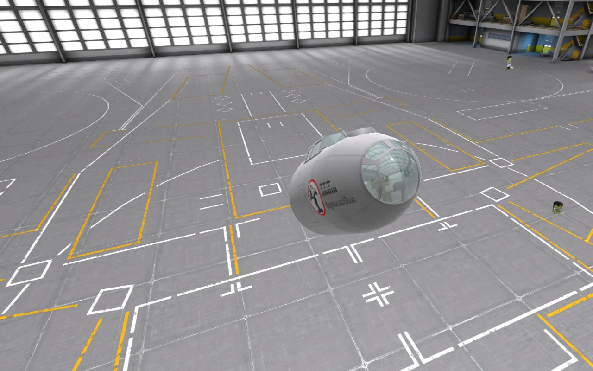
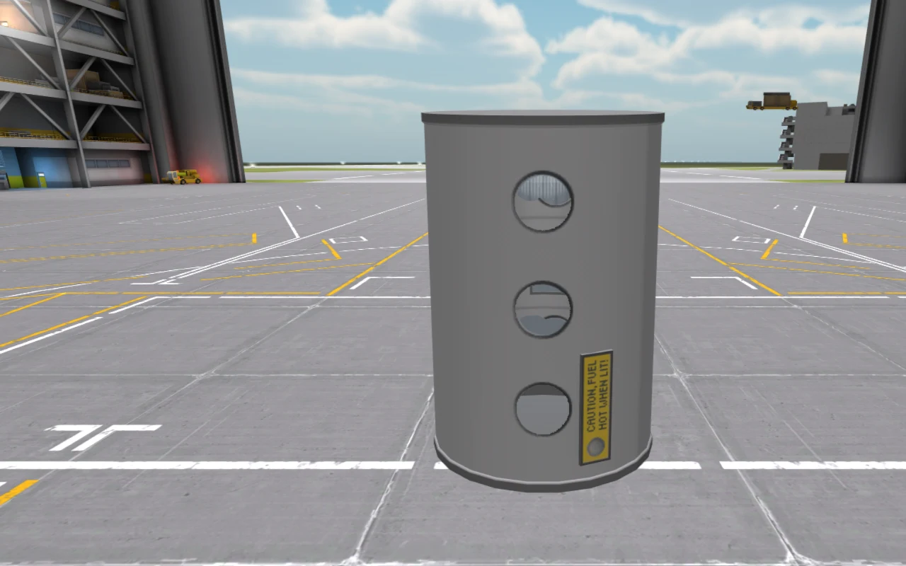
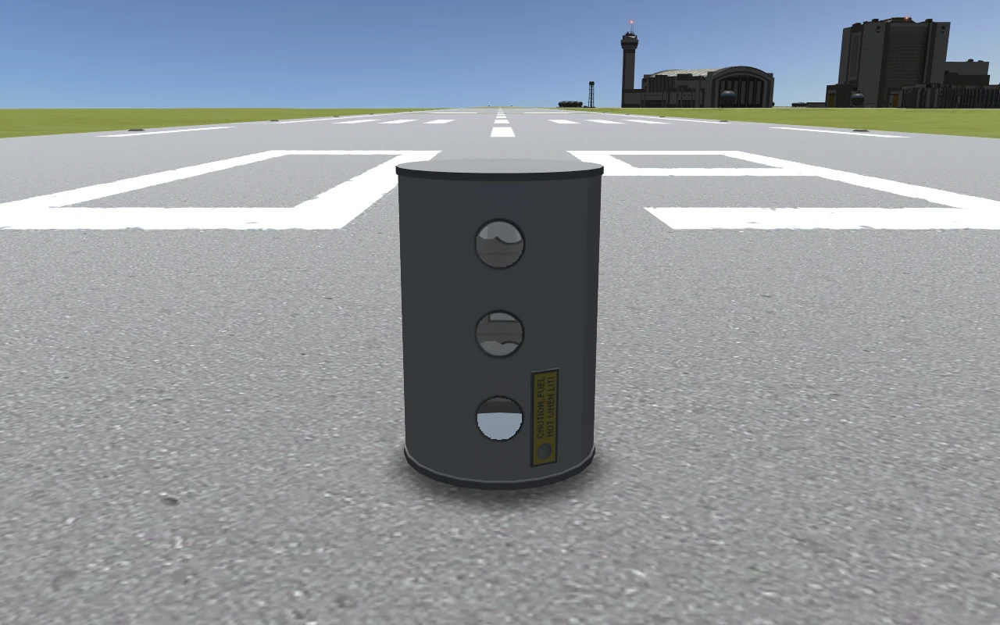
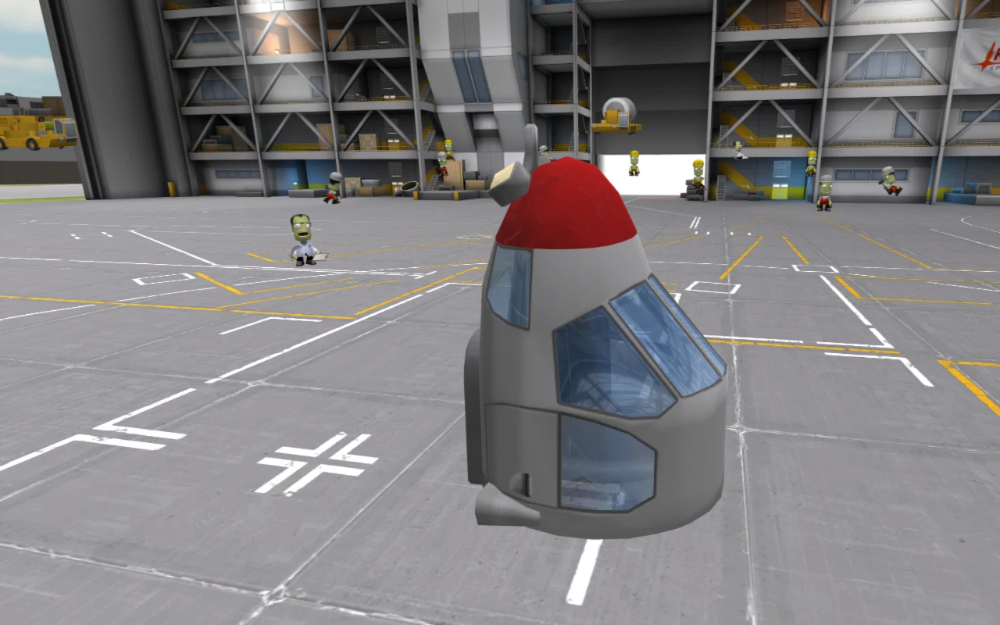
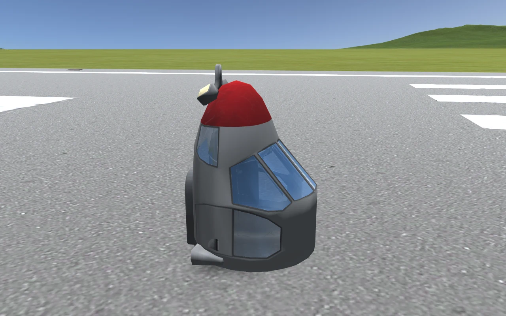

ShineFix home
← Back to supported mods
Firespitter
Optics verified
Human tested
Version v7.17
Compatibility evidence
Original screenshot gallery
Approved retake evidence
Parts
FS1FH Bomber Cockpit

FS1OC Fighter Inline Cockpit
FS2CF Passenger Fuselage


FS2CP Helicopter Cockpit


FS2OC Attack Helicopter Cockpit